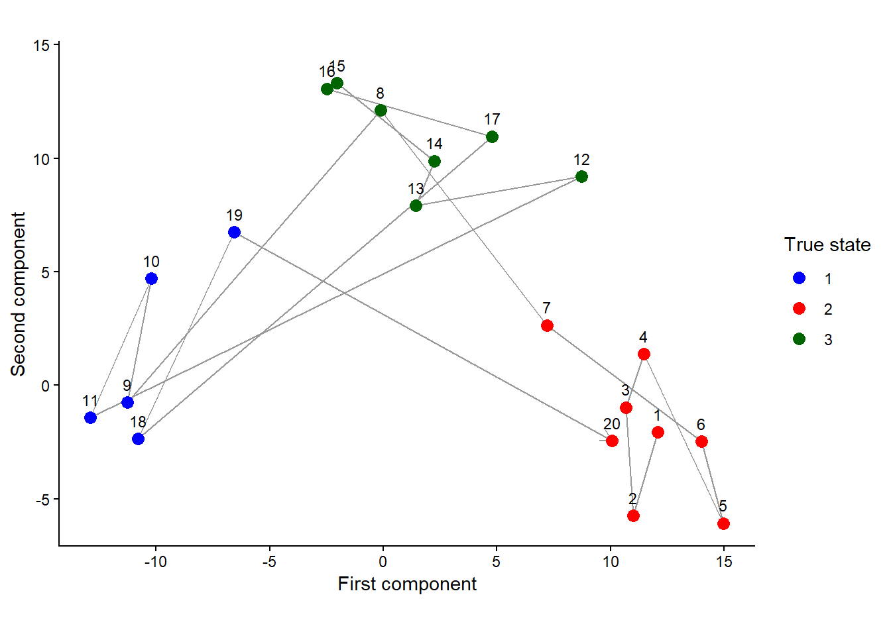
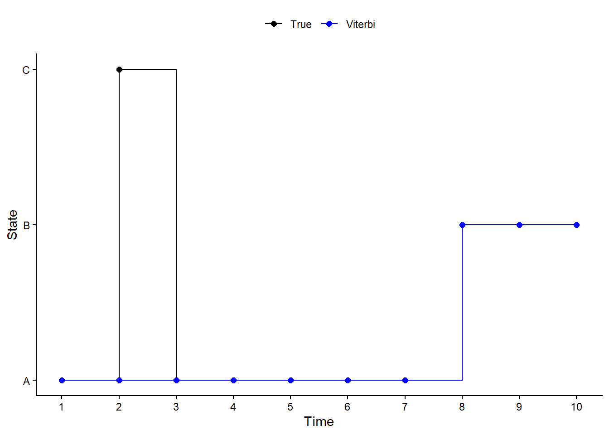
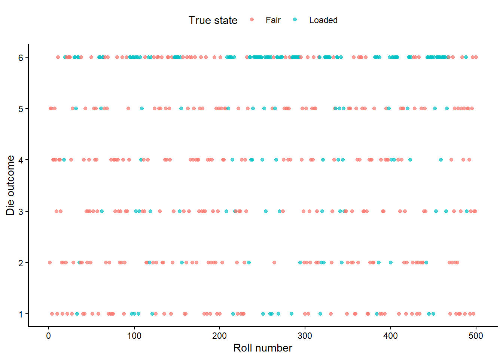

Show R code
library(ggplot2)
library(depmixS4)
theme_set(theme_minimal())
set.seed(4010)Simulation, likelihood calculation and state decoding
# function to calculate the stationary state probabilities
stationary <- function(Gamma) {
k = nrow(Gamma)
# set up the equations for delta Gamma = delta
A = t(Gamma) - diag(k)
# replace one equation so the probabilities sum to 1
A[k, ] = 1
b = c(rep(0, k - 1), 1)
# solve for the stationary probabilities
as.numeric(solve(A, b))
}
# function to simulate the hidden state sequence
simulate_states <- function(n, Gamma, delta) {
states = integer(n)
# sample the first state using the initial probabilities
states[1] = sample.int(nrow(Gamma), 1, prob = delta)
# sample each next state using the previous state's transition row
if (n > 1) {
for (t in 2:n) {
states[t] = sample.int(
nrow(Gamma), 1,
prob = Gamma[states[t - 1], ]
)
}
}
states
}
# function for the forward algorithm
# each row of emission gives the observation likelihood under each state
forward_hmm <- function(emission, Gamma, delta) {
n = nrow(emission)
k = ncol(emission)
# storage for the filtered state probabilities
filtered = matrix(NA_real_, n, k)
loglik = 0
prob = delta
for (t in seq_len(n)) {
# predict the current state probabilities from the previous step
if (t > 1) prob <- drop(prob %*% Gamma)
# combine the state probabilities with the observation likelihoods
weight = prob * emission[t, ]
scale = sum(weight)
# stop if the normalizing value is zero or not finite
if (!is.finite(scale) || scale <= 0) {
return(list(loglik = -Inf, filtered = filtered))
}
# normalize so the updated probabilities sum to 1
prob = weight / scale
filtered[t, ] = prob
# accumulate the log likelihood
# scaling at each step helps avoid numerical underflow
loglik = loglik + log(scale)
}
list(loglik = loglik, filtered = filtered)
}
# function to find the most likely complete hidden state sequence
viterbi_hmm <- function(emission, Gamma, delta) {
n = nrow(emission)
k = ncol(emission)
# stores the best log score and previous state for each position
score = matrix(-Inf, n, k)
previous = matrix(0L, n, k)
# initializes using the first observation and initial probabilities
score[1, ] = log(delta) + log(emission[1, ])
if (n > 1) {
for (t in 2:n) {
for (j in seq_len(k)) {
# compares paths entering state j from each possible previous state
candidate = score[t - 1, ] + log(Gamma[, j])
# savse the best previous state and update the path score
previous[t, j] = which.max(candidate)
score[t, j] = max(candidate) + log(emission[t, j])
}
}
}
# starts with the best final state
path = integer(n)
path[n] = which.max(score[n, ])
# works backward to recover the most likely state sequence
if (n > 1) {
for (t in seq.int(n - 1, 1)) {
path[t] = previous[t + 1, path[t + 1]]
}
}
path
}\[ [\mathbf{x}_t \mid z_t = k, \theta] \sim N(\boldsymbol{\mu}_k, \Sigma_k) \]
with transition probability matrix
\[ \Gamma = \begin{pmatrix} 0.8 & 0.1 & 0.1 \\ 0.1 & 0.8 & 0.1 \\ 0.1 & 0.1 & 0.8 \end{pmatrix}. \]
# mean vectors for the three states
mu <- 10 * matrix(
c(-1, 0, 1, 0, 0, 1),
ncol = 2, byrow = TRUE
)
# covariance matrices for the three states
sf <- 10
sigma <- array(0, dim = c(2, 2, 3))
sigma[, , 1] <- sf * matrix(c(1, 1/2, 1/2, 1), nrow = 2)
sigma[, , 2] <- sf * matrix(c(1, -1/2, -1/2, 1), nrow = 2)
sigma[, , 3] <- sf * matrix(c(3, 0, 0, 1/2), nrow = 2)
# transition probabilities between states
Gamma <- matrix(
c(0.8, 0.1, 0.1,
0.1, 0.8, 0.1,
0.1, 0.1, 0.8),
nrow = 3, byrow = TRUE
)
# simulates the hidden states using a stationary initial distribution
set.seed(4010)
n <- 20
delta <- stationary(Gamma)
states <- simulate_states(n, Gamma, delta)
# each observation using its state's mean and covariance
observations <- matrix(0, nrow = n, ncol = 2)
for (t in seq_len(n)) {
k <- states[t]
observations[t, ] <- mu[k, ] +
drop(t(chol(sigma[, , k])) %*% rnorm(2))
}
# the observations and true states
simulated_data <- data.frame(
time = seq_len(n),
x1 = observations[, 1],
x2 = observations[, 2],
state = factor(states, levels = 1:3)
)
simulated_data time x1 x2 state
1 1 12.0764129 -2.0757909 2
2 2 10.9938479 -5.7420894 2
3 3 10.6931188 -0.9788311 2
4 4 11.4588631 1.3669820 2
5 5 14.9640540 -6.0814831 2
6 6 14.0176090 -2.4733400 2
7 7 7.1983705 2.6427105 2
8 8 -0.1140189 12.1116942 3
9 9 -11.2719177 -0.7511675 1
10 10 -10.2288920 4.6995556 1
11 11 -12.8909574 -1.4293118 1
12 12 8.7327340 9.1902123 3
13 13 1.4238562 7.9033455 3
14 14 2.2414210 9.8845831 3
15 15 -2.0456405 13.3086863 3
16 16 -2.4793782 13.0681414 3
17 17 4.7991062 10.9623859 3
18 18 -10.7893425 -2.3649320 1
19 19 -6.5667782 6.7358040 1
20 20 10.0797588 -2.4425884 2I first simulated 20 hidden states using the transition matrix and its stationary distribution, which assigns probability (1/3) to each initial state. The probability of remaining in the current state is 0.8, while the total probability of switching is 0.2, so runs within the same state are expected. Each observation was then generated from the bivariate Gaussian distribution associated with its state. The code selects the appropriate mean vector and covariance matrix using states[t]. Observations from the same state still differ because they are random draws from that distribution.
# plots the observations
ggplot(simulated_data, aes(x1, x2)) +
geom_path(
aes(group = 1),
colour = "grey60",
arrow = grid::arrow(
length = grid::unit(0.1, "inches")
)
) +
geom_point(aes(colour = state), size = 3) +
geom_text(aes(label = time), nudge_y = 0.8, size = 3) +
scale_colour_manual(
values = c("1" = "blue", "2" = "red", "3" = "darkgreen"),
drop = FALSE
) +
coord_equal() +
labs(
x = "First component",
y = "Second component",
colour = "True state"
) +
theme_classic()
The plot shows three distinct groups corresponding to the hidden states. State 1 observations (blue) lie on the left, state 2 observations (red) on the lower right, and state 3 observations (green) towards the top. These locations are consistent with the specified mean vectors ((-10,0)), ((10,0)) and ((0,10)).
The numbered points and connecting lines show the sequence over time. Observations 1–7 remain in state 2, while observations 12–17 remain in state 3, illustrating the persistence encouraged by the 0.8 probability of staying in the current state. Other points show switches between states. Variation within each group reflects the randomness of the Gaussian observations and their state-specific covariance matrices.
If only the observations were available and all model parameters were unknown, I would estimate the transition probabilities and the mean vector and covariance matrix for each of the three states. Each transition matrix row has two free probabilities because its three entries must sum to one, giving \((3(3-1)=6\) free parameters. Each bivariate Gaussian distribution has two means and three distinct covariance parameters, giving \(3(2+3)=15\) parameters across the states. The total is therefore \(6+15=21\) free parameters when the initial distribution is determined by stationarity. If the initial distribution is estimated separately, it contributes two additional free parameters, giving 23. The hidden state sequence is inferred separately and is not included in this parameter count.
The following are 10 observations from a three-state HMM, with states A, B and C, and possible observations x, y and z:
Use the following initial state probabilities, transition probability matrix and emission probability matrix:
# observations and possible states
obs <- c(rep("x", 7), "z", "z", "y")
obsposs <- c("x", "y", "z")
state_names <- c("A", "B", "C")
# initial state probabilities
init <- c(0.4, 0.3, 0.3)
# transition probabilities
tpm <- matrix(
c(0.5, 0.3, 0.2,
0.1, 0.6, 0.3,
0.2, 0.2, 0.6),
byrow = TRUE, ncol = 3
)
# emission probabilities
emmprob <- matrix(
c(0.6, 0.2, 0.2,
0.1, 0.5, 0.4,
0.3, 0.3, 0.4),
byrow = TRUE, ncol = 3
)
# log probabilities
log_init <- log2(init)
Gamma <- log2(tpm)
em.probs <- log2(emmprob)
n <- length(obs)
K <- length(state_names)
# best log score for each state at each time
xi <- matrix(0, nrow = K, ncol = n)
# initializes using the first observation
oi <- match(obs[1], obsposs)
xi[, 1] <- log_init + em.probs[, oi]
# calculates best path score ending in each state
for (i in 2:n) {
oi <- match(obs[i], obsposs)
for (j in seq_len(K)) {
xi[j, i] <- max(xi[, i - 1] + Gamma[, j]) +
em.probs[j, oi]
}
}
# backtracks from the best final state
path <- integer(n)
path[n] <- which.max(xi[, n])
for (i in seq.int(n - 1, 1)) {
path[i] <- which.max(xi[, i] + Gamma[, path[i + 1]])
}
# comparison
decoded <- state_names[path]
true_states <- c("A", "C", "A", "A", "A", "A", "A", "B", "B", "B")
comparison <- data.frame(
time = seq_len(n),
observation = obs,
true_state = true_states,
decoded_state = decoded
)
decoded [1] "A" "A" "A" "A" "A" "A" "A" "B" "B" "B"# combine the true and decoded sequences for plotting
plot_data <- rbind(
data.frame(
time = seq_len(n),
state = match(true_states, state_names),
sequence = "True"
),
data.frame(
time = seq_len(n),
state = path,
sequence = "Viterbi"
)
)
ggplot(plot_data, aes(time, state, colour = sequence)) +
geom_step() +
geom_point(size = 2) +
scale_x_continuous(breaks = seq_len(n)) +
scale_y_continuous(breaks = 1:3, labels = state_names) +
scale_colour_manual(values = c("True" = "black", "Viterbi" = "blue")) +
labs(x = "Time", y = "State", colour = NULL) +
theme_classic() +
theme(legend.position = "top")
The Viterbi algorithm assigns state A to the first seven observations and state B to the final three. This is consistent with the emission probabilities, since A has the highest probability of producing x, while B can produce z and has the highest probability of producing y. The algorithm also accounts for transition probabilities when selecting the most likely complete sequence.
The decoded sequence agrees with the true sequence except at time 2, where it selects A instead of C. Although C can produce x, remaining in A gives a more probable overall path than switching to C and then returning to A. This illustrates that the most likely state sequence does not necessarily recover every true hidden state.
Consider a stationary two-state Poisson HMM with parameters
\[ \Gamma = \begin{pmatrix} 0.1 & 0.9 \\ 0.4 & 0.6 \end{pmatrix} \]
and \(\lambda=(1,3)\).
In each of the following ways, compute the probability that the first three observations are \(0,2,1\).
[1] 0.3076923 0.6923077# paths
paths3 <- expand.grid(
s1 = 1:2,
s2 = 1:2,
s3 = 1:2
)
# probability of each hidden state sequence
paths3$state_probability <- apply(paths3[, 1:3], 1, function(s) {
delta3[s[1]] *
Gamma3[s[1], s[2]] *
Gamma3[s[2], s[3]]
})
# probabilities
paths3$observation_given_states <- apply(
paths3[, 1:3], 1, function(s) {
prod(dpois(x3, lambda = lambda3[s]))
}
)
# joint probabilities
paths3$joint_probability <-
paths3$state_probability * paths3$observation_given_states
paths3 s1 s2 s3 state_probability observation_given_states joint_probability
1 1 1 1 0.003076923 0.024893534 7.659549e-05
2 2 1 1 0.027692308 0.003368973 9.329465e-05
3 1 2 1 0.110769231 0.030320761 3.358607e-03
4 2 2 1 0.166153846 0.004103469 6.818071e-04
5 1 1 2 0.027692308 0.010106920 2.798840e-04
6 2 1 2 0.249230769 0.001367823 3.409036e-04
7 1 2 2 0.166153846 0.012310407 2.045421e-03
8 2 2 2 0.249230769 0.001666032 4.152265e-04[1] 0.00729174enumeration matrix
0.00729174 0.00729174 We have the general expression
\[ L_T=\delta P(x_1)\Gamma P(x_2)\cdots\Gamma P(x_T)\mathbf{1} \]
for the likelihood of an HMM, for example of Poisson type. Consider the special case in which the Markov chain becomes a sequence of independent random variables, giving an independent mixture model.
Show that the likelihood simplifies to
\[ L_T(\theta_1,\ldots,\theta_m,\delta_1,\ldots,\delta_m) = \prod_{j=1}^{T} \left[ \sum_{i=1}^{m}\delta_i p_i(x_j;\theta_i) \right]. \]
Use the probabilities shown in the source diagram. The initial distribution and simulation length were not specified; use stationarity and 500 rolls.
# transition probabilities
Gamma6 <- matrix(
c(0.95, 0.05,
0.10, 0.90),
nrow = 2, byrow = TRUE
)
# outcome probabilities
emission6 <- rbind(
Fair = rep(1/6, 6),
Loaded = c(rep(0.1, 5), 0.5)
)
# hidden die sequence simulated
set.seed(4010)
n6 <- 500
delta6 <- stationary(Gamma6)
states6 <- simulate_states(n6, Gamma6, delta6)
rolls6 <- integer(n6)
for (t in seq_len(n6)) {
rolls6[t] <- sample(
1:6, size = 1,
prob = emission6[states6[t], ]
)
}
# rolls and true states
casino_data <- data.frame(
time = seq_len(n6),
roll = rolls6,
state = factor(
states6,
levels = 1:2,
labels = c("Fair", "Loaded")
)
)
# plot
ggplot(casino_data, aes(time, roll, colour = state)) +
geom_point(alpha = 0.7) +
scale_y_continuous(breaks = 1:6) +
labs(
x = "Roll number",
y = "Die outcome",
colour = "True state"
) +
theme_classic() +
theme(legend.position = "top")
1 2 3 4 5 6
Fair 0.15838509 0.17701863 0.15527950 0.17080745 0.18012422 0.15838509
Loaded 0.08426966 0.06179775 0.08426966 0.07865169 0.08426966 0.60674157Assume a two-state Bernoulli HMM defined as follows.
The transition probability matrix is
\[ \Gamma = \begin{pmatrix} 0.5 & 0.5 \\ 0.25 & 0.75 \end{pmatrix}. \]
The state-dependent distributions are given by
\[ P(X_t=x \mid C_t=1)=0.5, \qquad x=0,1, \]
and
\[ P(X_t=1 \mid C_t=2)=1. \]
The stationary distribution is
\[ \delta=\frac{1}{3}(1,2). \]
Find \(P(0)\) and \(P(1)\).
Write a function to calculate the likelihood.
Check that, for the observations \((X_1=1,X_2=1,X_3=1)\),
\[ L=\frac{29}{48}. \]
[,1] [,2]
[1,] 0.5 0
[2,] 0.0 0 [,1] [,2]
[1,] 0.5 0
[2,] 0.0 1# Bernoulli HMM likelihood
bernoulli_likelihood <- function(x, log = FALSE) {
stopifnot(length(x) > 0, all(x %in% c(0, 1)))
phi = delta7
ll = 0
for (i in seq_along(x)) {
Pi = P7(x[i])
if (i == 1) {
v = phi %*% Pi
} else {
v = phi %*% Gamma7 %*% Pi
}
# normalizes and accumulate the log likelihood
u = sum(v)
if (u <= 0) {
return(if (log) -Inf else 0)
}
ll <- ll + log(u)
phi <- drop(v / u)
}
if (log) ll else exp(ll)
}
c(
calculated = bernoulli_likelihood(c(1, 1, 1)),
expected = 29/48
)calculated expected
0.6041667 0.6041667 This tutorial helped me consolidate my understanding of Hidden Markov Models and how an unobserved state sequence influences the observations. I explored simulation, transition and emission probabilities, Viterbi decoding, and likelihood calculations. Adapting the lecture code helped me connect the mathematical expressions to their implementation in R. I also learned that finding the most likely state sequence differs from calculating the likelihood, which sums over all possible hidden paths.
Due to time constraints, I decided not to complete Questions 5 and 8. My next steps are to revisit these questions, practise explaining the forward and Viterbi algorithms in my own words, and strengthen my understanding of how HMM parameters are estimated.